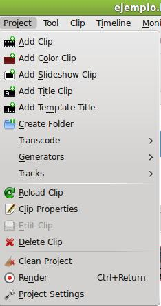
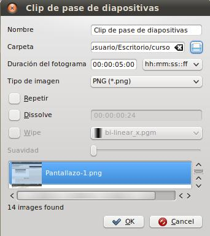
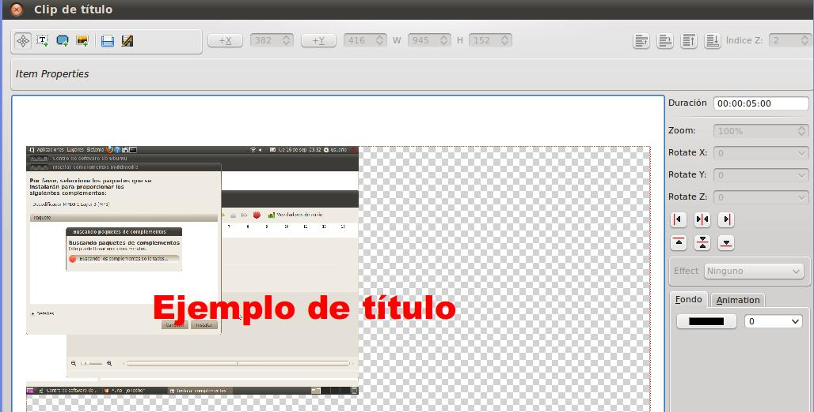
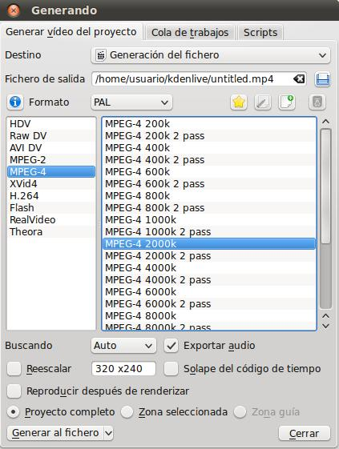
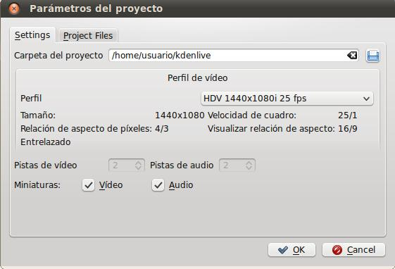

Edición de Audio y video
C. Proyecto
El menú proyecto nos permite realizar todas las acciones de inserción, modificación y eliminación de los elementos que componen el mismo.
- Añadir (Add):
-
Clip: es un fichero de audio o video que vamos agregar en nuestro árbol del proyecto.
-
Clip de color (Add color clip): Genera una serie de frames (medidos en segundos de línea de tiempo) en la que generamos una película con un color determinado. Válido para mezclar con otro clip y presentar un fondo.
-
Clip de presentación de Diapositivas (Add slideshow clip): nos permite generar un video con fotografías que tengamos en una carpeta permitiendo unos efectos, tiempo de duración y transición.
-
Clip de Título (Add Title Clip): nos permite generar un video con un título y que sirve para mezclar con otros clips de nuestro proyecto. Su funcionamiento es similar a cualquier editor de imagen: poner fondo, texto, etc.
-
Plantilla de Título (Template Title): si generas un título y lo deseas utilizar de base para otros, al momento de generar el título en el apartado anterior, lo guardas como plantilla y podrás disponer de ella en este apartado.
-
- Crear Carpeta (Create Folder): idem.
- Transcodificar (Transcode): transformar el actual proyecto a alguna de las opcines que nos brinda (observa la imagen).
- Generadores (Generators):Son unas utilidades que nos permiten generar un fichero de ruido (audio) o un clip de video cuenta atrás como el que aparece en las películas comerciales.
- Pistas (Tracks): agregar, eliminar y cambiar las pistas (ejemplo: pasar una pista de video a sólo audio).
- Propiedades del Clip (Clip Properties): Esta zona del menú nos permite actuar sobre nuestros clips.
- Recargar
- Ver las propiedades del clip (ejmplo: si deseamos transcodificarlo)
- Eliminar.
- Borrar Clip: Eliminar un clip o lemento de nuestro proyecto.
- Limpiar proyecto (Clean Project): nos permite borrar o eliminar todos los elementos que componen nuestro proyecto.
- Generar Video (Render): Nos permite generar un video de nuestro proyecto. Debemos elegir el formato, el códec, el tamaño, resolución, entre otros.
- Parámetros del Proyecto (Project Settings): Al crear el proyecto o en este apartado podemos cambiar la carpeta de destino, el tipo de fichero, el formato, entre otros aspectos.
-
- 
Las pantallas mostradas pueden cambiar de acorde a la versión que se disponga.
Algunas Pantallas relacionadas con el uso de este menú
AÑADIR CLIP DE DIAPOSITIVAS

AÑADIR CLIP DE TÍTULO

GENERAR VIDEO


Jo.R.C.A. 2004 - 2011

Edición de Audio y Video con Software Libre by José Ramón Cerdeira Alonso is licensed under a Creative Commons Reconocimiento-No comercial-Compartir bajo la misma licencia 3.0 España License